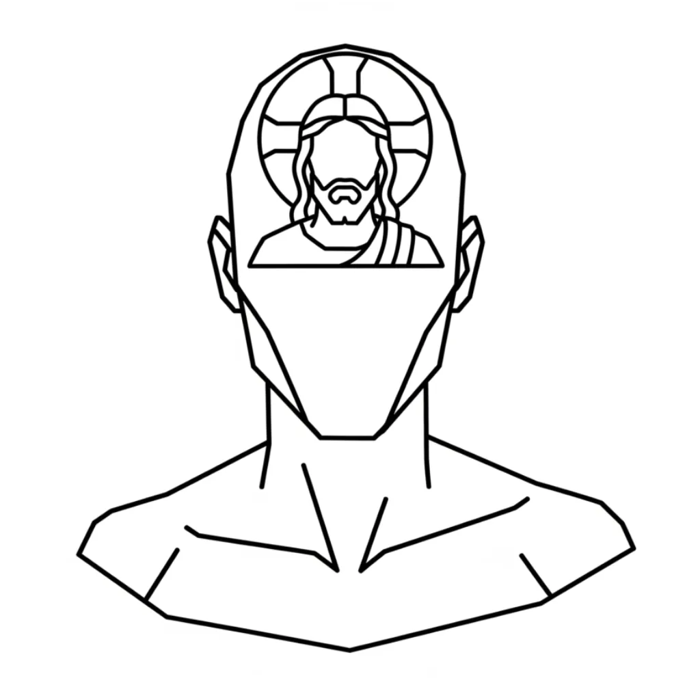

As you begin, consider temporarily setting aside previous interpretations of the Bible. Reasonably speaking, attempting to combine traditional theology with this approach tends to create confusion; here, Scripture is approached as a revelation of your own personal identity.
The Bible presents its ideas through dramatic scenes and characters, yet its purpose is not to encourage elaborate mental theatre. The value lies in recognising the relationships being illustrated and allowing those patterns to shape your own assumptions. The language is simple, but the meaning is not intended to be taken literally.
One of the primary ways the Bible teaches is through contrast. Pairs such as Cain and Abel, David and Saul, John and Jesus, Solomon and Nathan, or the Tree of Life and the Tree of the Knowledge of Good and Evil reveal two different conditions of mind. One reflects everyday awareness shaped by appearances; the other represents the creative state of being that produces new outcomes.
These characters are therefore not just individuals within a story. They represent identifiable states of consciousness. Abel, like the Tree of Life, symbolises the creative and enriched state being taught, while Cain reflects the ordinary mind governed by what it sees. The stories illustrate the movement between these states and the results that follow from occupying them.
For this reason, the books of the Bible themselves can be understood as collections of identities and mental postures. Each book develops particular states of being through its characters and events, allowing the reader to recognise these same conditions within their own experience. In a sense, the text uses motifs of architecture — shepherds, kings, houses, and kingdoms — to map out the structures of the mind, giving the reader a blueprint for organising their inner world.
When Scripture declares that "the kingdom of God is within you" (Luke 17:21), it reveals that this entire structure exists within the reader. A kingdom contains rulers, judges, and citizens; likewise the mind contains many thoughts, impulses, and judgments organised around the identity a person accepts as "I AM".
The narrative of the Bible therefore portrays consciousness learning to organise its many inner voices around a chosen state of being. The shepherd gathers the sheep, the king governs the kingdom, and the house is brought into order. Each image describes the same process: the mind arranging its inner life around the identity it assumes, using architectural imagery as a guide for constructing a coherent and harmonious inner reality.
THE LINGUISTIC ENGINE: YHVH / Ehyeh / Elohim
"I AM THAT WHICH I AM" — Exodus 3:14
Exodus 3:14 reveals the full operational Name of God as: Elohim of Ehyeh — the Judges & Rulers of I AM. The governing structure (Elohim) operates under and in response to the identity assumed as I AM. The Name is not a singular personality but a governmental structure. YHVH/LORD is present consciousness — here and now. Ehyeh/I AM is the identity YHVH/LORD chooses to occupy; the active "I AM" claim made within awareness. Elohim is the structured plurality of consciousness — the many internal governing voices — that judge, stabilise, and execute whatever identity is dominantly assumed. YHVH/LORD presents an identity (Ehyeh/I AM); Elohim — the Judges & Rulers of that I AM — must uphold the outcome according to the laws of creation.
Read more on this here.THE DEFINITION OF GOD: Genesis 1:1
"In the beginning God created…"
The Hebrew word rendered 'God' is Elohim, a plural term meaning judges, rulers, and powers. It is the internal government of self — the structured plurality of consciousness that judges, stabilises, and executes whatever identity is dominantly assumed as I AM. Ezekiel's "wheels within wheels," full of eyes, symbolise the self-perceiving movements of this internal government. The twelve sons, twelve tribes, and twelve disciples are personified expressions of these internal governing voices, brought into unified agreement beneath one assumed I AM.
Read more on this here.TIMELINE OF EVENTS:
"The law of Assumption as it permeates and develops in conscious awareness"
Here is a summarised timeline of events as the law of Assumption permeates and develops in the mind through the narrative of scripture.
Read more on this here.THE SEED OF LIFE — THREAD 1: SEED, TREE, VINE, WINE: Genesis 1:11
The seed of every experience is the latent TO BE within present consciousness. Everything reproduces after its kind because Elohim — the judges and rulers of I AM — enforces reproduction according to the identity assumed. Botanical imagery throughout Scripture — the Garden of Eden, vine and branches, mustard seed, olive tree, wine, harvest — always shows YHVH/LORD assuming an identity (Ehyeh/I AM) before Elohim enforces it. It is the first expression of the two trees in the Garden of Eden.
Read more on this here.JUDGEMENT — THREAD 2: RIGHTEOUSNESS, "IT WAS GOOD":
Every act of judgement in Scripture is YHVH/LORD evaluating the present state — identifying what is good or desired within consciousness. Ehyeh/I AM declares the assumed identity to be realised; Elohim impartially enforces alignment according to the statutes of creation. When God sees that "it was good," this is consciousness recognising that the assumed identity and the enforced outcome are in alignment. Righteousness is therefore not moral perfection but precise correspondence between what is assumed as I AM and what Elohim is enforcing.
Read more on this here.MAN AS INDIVIDUAL PERCEPTION OF SELF: Genesis 1:26
"God said, Let us make man in our image."
Identity is the primary creative unit. Elohim — the judges and rulers of I AM — convene to establish what exists. YHVH/LORD, present consciousness, assumes Ehyeh/I AM and Elohim is bound to enforce it. "Man" is the self-concept — who you are aware of being — not a physical form. Any male or female character in the Bible is a personified psychological state within consciousness.
Read more on this here.WOMAN AS THE ASSUMED IDENTITY: Genesis 2:23
The assumed identity — Ehyeh/I AM — drawn from YHVH/LORD, the existing sense of I AM that I AM. When fully occupied, this new state gives rise to new circumstances as Elohim enforces what has been assumed.
Read more on this here.LOVE — THREAD 3: THE CLEAVING PRINCIPLE: Genesis 2:24
"Therefore a man shall leave his father and his mother and shall cleave to his wife, and they shall be one flesh"
One of the most important verses. YHVH/LORD — the Bridegroom — recognises old, familiar states within consciousness and actively leaves them, detaching from habitual patterns or previously assumed identities. Ehyeh/I AM — the Bride — is the latent identity now assumed; the new self internalised as Marriage, a relational harmony of fully occupied being. The two become one flesh. Elohim enforces the statute of continuity, ensuring the assumed state manifests. This is the Ask → Believe → Receive principle encoded as union: Ask is YHVH/LORD recognising the desire; Believe is the assumption of Ehyeh/I AM as already true; Receive is Elohim enforcing the outcome into manifestation.
Read more on this here.PLURALITY — THREAD 4: THE SHEPHERD AND THE TWELVE:
YHVH/LORD is the Shepherd — gathering consciousness. It observes and collects the fragmented "sheep" of consciousness: the scattered impulses and wandering voices (Legion) that act independently. Ehyeh/I AM is the One Fold — the unified, governing identity assumed by the Shepherd. Elohim enforces the boundaries of that Fold, ensuring coherence once the fragmented voices are aligned. The twelve disciples are these internal governing voices brought into one coherent Ehyeh/I AM. Sheep and goats are not moral categories but a naturally enforced distinction: unified thoughts are sheep; rebellious fragments are goats.
Read more on this here.REVERSAL — THREAD 5: FROM PIT TO PALACE: Joseph as Example
Joseph in the pit is YHVH/LORD in present consciousness. The assumed identity — Ehyeh/I AM — is that of ruler, not prisoner. Elohim upholds the statutes of reality and enforces the new state when presented by YHVH/LORD. Joseph rises from pit to palace not by circumstance but because Elohim enforces whatever I AM is assumed. The same courtroom mechanics operate in every narrative of reversal throughout Scripture.
Read more on this here.GARDEN TO KINGDOM — THREAD 6: The Structural Arc
The Garden is current consciousness; the Kingdom is fully realised identity. The entire structural arc of Scripture maps the same movement: seed → nation, vine → kingdom, shepherd → king, tree → cross, wine → covenant. YHVH/LORD presents Ehyeh/I AM; Elohim enforces. Genesis 1–2 establishes the mechanics and the courtroom; the rest of Scripture demonstrates those mechanics operating across every scale of human experience.
Read more on this here.SIN — THREAD 7: THE JURISDICTIONAL ERROR: Genesis 4:4–7
"And the Lord was pleased with Abel's offering.....But in Cain and his offering he had no pleasure. And Cain was angry"
Sin is a jurisdictional error — missing the mark. YHVH/LORD presents a fragmented or contradictory identity while claiming the desired outcome; Elohim impartially enforces whatever is actually assumed. If YHVH/LORD presents "Lack," Elohim rules in favour of Lack. Sin is therefore a mechanical failure in the Linguistic Engine — a false filing. Repentance is the correction: amending the filing to shift Ehyeh/I AM back to the intended mark so Elohim enforces the desired outcome.
Read more on this here.NAMES — THREAD 8: IDENTITY CODES:
Abraham, Jacob, Joseph, Judah
Names in Scripture are not labels — they are compressed identity codes. A name reveals the intrinsic nature of the state being occupied, and the narrative unfolds according to that meaning because Elohim enforces identity after its kind. YHVH/LORD encounters or assumes a named character — meaning a defined quality of being. Ehyeh/I AM becomes the meaning embedded in the name. Elohim enforces the nature encoded in that name as lived experience. Abraham — Father of Many — assumes an identity of multiplication. Jacob becomes Israel — He Shall Prevail — when struggle resolves into prevailing. Joseph — He Shall Add — rises because the state contains increase. Judah — Praise — holds the state of elevation and acknowledgement. Their stories show how YHVH/LORD assumes Ehyeh/I AM and Elohim enforces it into creation. This applies equally to place names, covenant names, and divine titles.
Read more on this here.ASK, BELIEVE, RECEIVE — THE CLEAVING PRINCIPLE IN MOTION:
"And whatever you ask for in prayer, if you have faith, you will receive it." — Matthew 21:22
Ask, believe, receive is the cleaving principle in motion. To ask is YHVH/LORD recognising the desire and turning away from the old familiar state. To believe is the assumption of Ehyeh/I AM — the chosen identity occupied as already true. To receive is Elohim fulfilling its role: the judges and rulers of that I AM enforcing the outcome into manifestation.
Read more on this here.THE BIBLE'S NUMBER SYSTEM: Jurisdictional Markers
"Here is wisdom. Let him that hath understanding count the number" — Revelation 13:18
Every significant number in Scripture marks a precise position within the mechanism. Numbers in the Bible are not decorative — they are jurisdictional. Each one identifies where in the creative process YHVH/LORD, Ehyeh/I AM, and Elohim are operating: whether the identity is being assumed, grounded in creation, completing its cycle, or the old verdict is expiring. Leviticus — the legal manual of Elohim's court — seals every number with legislative precision, confirming the system is operative law, not symbol alone.
Read the complete number map here.